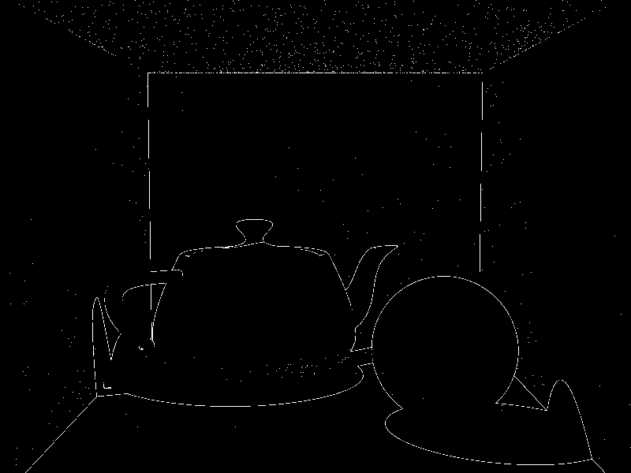

| MacBook Pro (Retina, 13-inch, Early 2015) | |
|---|---|
| Processor | 2.9GHz intel Core i5 |
| Memory | 8GB 1867 MHz DDR3 |
| Graphics | Intel Iris Graphics 6100 1536 MB |
| Skylight Teapot | Cornell Box |
|---|---|
|
|
| Parameters | |
|---|---|
| Thread | 8 |
| Bounce | 4 |
| adaptive sampling threshold | 0.01 |
| adaptive sampling samples | 4, or 16 |
| soft shadow samples | 4 |
| Hemisphere samples | 500 |
| Gamma Correction | Off |
| time | 0:49:42 |
| Output | Sample Count |
|---|---|
|
| Parameters | |
|---|---|
| Thread | 8 |
| Bounce | 2 |
| adaptive sampling threshold | 0.001 |
| adaptive sampling samples | 4, or 16 |
| soft shadow samples | 4 |
| Hemisphere samples | 20 |
| Gamma Correction | 3.2 |
| time | 00:18:19 |
| Output | Sample Count |
|---|---|
|
 |
| Issue | Blue wall reflect objects |
|---|---|
| Solution | The 3 vectors used to generate direction on hemisphere should be normalized. |

| Issue | Using scaling to make scene brighter. |
|---|---|
| Solution | Multiplying pi to the indirect color is not the correct way to adjust color. Gamma correction is the general way to do it. |